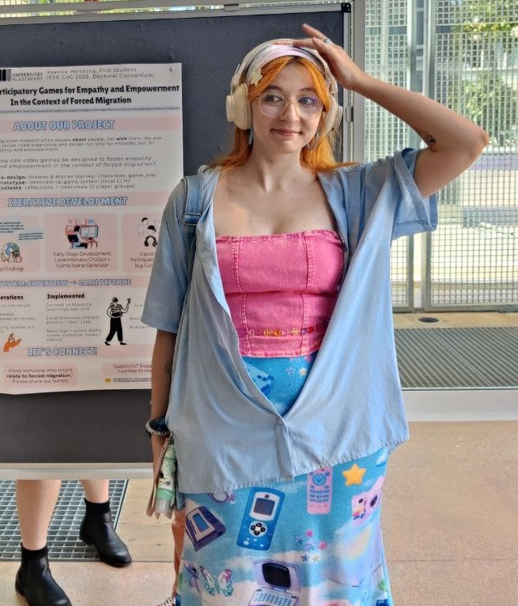
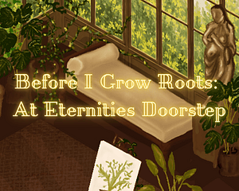
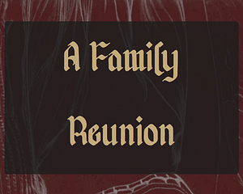
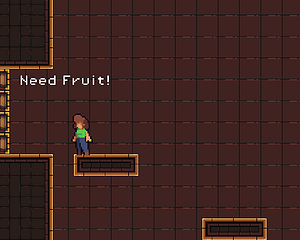
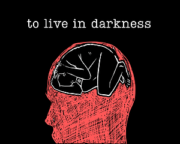
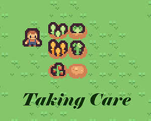
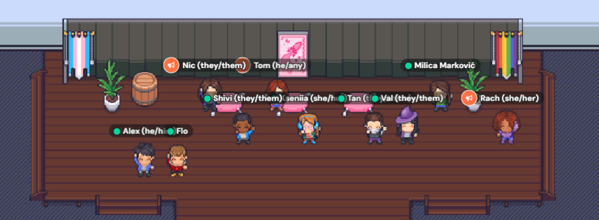
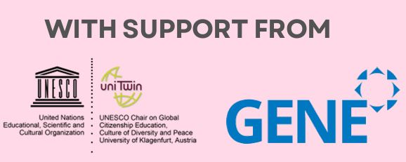

Games Intersectional Roundtables
A welcoming community exploring games through intersectional perspectives. Meet, share your work, and play with us.
Based in Austria · Open internationally
What’s happening
We meet monthly. The next roundtable date will be announced here. Email us for an invitation to our Discord.
A little about us
Different perspectives.
Shared space.
We bring together marginalized people and allies across game studies, game making, art, and academia.
Roundtables, game clubs, workshops, and shared projects give us ways to learn from each other.
01Intersectionality at the centre
Rooted in Black feminist thought and Kimberlé Crenshaw’s work, we recognise how different forms of oppression overlap.
02Care over competition
Mutual support, accessibility, and space to learn at your own pace.
03Everyone has something to share
Lived experience matters. You don’t need an academic title or an impressive portfolio.
Meet the organisers

Kseniia
she/they
Discord: kseniaharshina
Made together
A look back.
Past roundtables and events
13–20 September 2026 · Klagenfurt & online
Games Intersectional Jam 2026
A non-competitive game jam at the University of Klagenfurt and on Discord. Participants submitted five games, all playable in the browser.
With funding from the Centre for Women’s and Gender Studies and Diversity, University of Klagenfurt.






19–20 September 2025 · Online
Games Intersectional
Symposium 2025
Two days of talks, play, and shared perspectives. Explore the programme and the people who made it happen.

Our zine of abstracts and reflections
Download the zine ↓(PDF, 51 MB)
From Grassroots to Global · 2026
Games Intersectional Roundtable
Our chapter traces how GIRT began and how roundtables, workshops, and shared play support marginalised people in games and academia. It reflects on community building, accessibility, and learning from one another.
Tan Schütz, Rachel Gorden, Kseniia Harshina & Tom Tuček · pp. 73–84
Read the chapter ↗
Email us for an invitation to our Discord.
Access needs or feedback? Tell us what would help you take part.
With support from
GIRT began with support from GloCo — Global Campus Online at the UNESCO Chair on Global Citizenship Education, Culture of Diversity and Peace, University of Klagenfurt, Austria.
